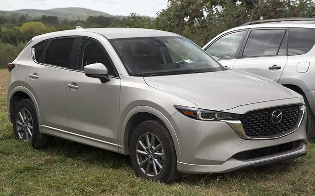

Par Motor › Precios por modelo › Mazda CX-5
Precio de segunda mano · noviembre de 2026¿Cuánto vale un Mazda CX-5 de segunda mano?

Precio justo estimado de un Mazda CX-5 usado en España, año por año, con los kilómetros normales para su edad y en buen estado: de 11.900 € a 39.400 €. Para tasar el tuyo con sus kilómetros reales y su estado, usa el tasador gratis.
Precios del Mazda CX-5 por año
CX-5 I (2012–2017)
Precio de nuevo: 2.0 165 CV, 27.000 € · 2.2 Skyactiv-D 150 CV, 30.000 € · 2.2 Skyactiv-D 175 CV, 33.000 €
| Año | Km normales | 2.0 165 CV · Gasolina | 2.2 Skyactiv-D 150 CV · Diésel | 2.2 Skyactiv-D 175 CV · Diésel |
|---|---|---|---|---|
| 2017 | 100.000 km | 14.400 € | 17.700 € | 19.400 € |
| 2016 | 100.000 km | 14.100 € | 16.700 € | 18.300 € |
| 2015 | 100.000 km | 13.800 € | 15.600 € | 17.200 € |
| 2014 | 100.000 km | 13.400 € | 14.600 € | 16.100 € |
| 2013 | 100.000 km | 12.700 € | 13.700 € | 15.100 € |
| 2012 | 100.000 km | 11.900 € | 12.900 € | 14.100 € |
CX-5 II (2017–2025)
Precio de nuevo: 2.0 165 CV, 30.000 € · 2.2 Skyactiv-D 150 CV, 34.000 € · 2.5 194 CV, 35.000 €
| Año | Km normales | 2.0 165 CV · Gasolina | 2.2 Skyactiv-D 150 CV · Diésel | 2.5 194 CV · Gasolina |
|---|---|---|---|---|
| 2025 | 20.000 km | 26.800 € | 29.200 € | 31.300 € |
| 2024 | 35.000 km | 25.200 € | 27.400 € | 29.300 € |
| 2023 | 50.000 km | 23.600 € | 25.700 € | 27.500 € |
| 2022 | 65.000 km | 22.100 € | 22.100 € | 25.800 € |
| 2021 | 80.000 km | 19.900 € | 20.500 € | 23.200 € |
| 2020 | 95.000 km | 17.500 € | 20.500 € | 20.400 € |
| 2019 | 100.000 km | 16.600 € | 20.400 € | 19.300 € |
| 2018 | 100.000 km | 16.300 € | 20.200 € | 19.000 € |
| 2017 | 100.000 km | 16.000 € | 20.000 € | 18.600 € |
CX-5 III (2025–hoy)
Precio de nuevo: 2.5 e-Skyactiv-G 141 CV, 38.000 €
| Año | Km normales | 2.5 e-Skyactiv-G 141 CV · Gasolina |
|---|---|---|
| 2026 | 5.000 km | 39.400 € |
| 2025 | 20.000 km | 34.000 € |
Kilómetros normales: 15.000 al año en gasolina, híbridos y eléctricos, y 20.000 en diésel, con un máximo de 100.000 km (por encima no tasamos: el precio depende demasiado del historial de cada coche). Cifras redondeadas a 100 €.
Preguntas frecuentes
¿Cuánto vale un Mazda CX-5 de segunda mano?
Según el año, la versión y los kilómetros, un Mazda CX-5 usado vale hoy de 11.900 € a 39.400 € en España. El más barato de nuestra tabla es un 2.0 de 2012 (11.900 €) y el más caro un 2.5 e-Skyactiv-G de 2026 (39.400 €). Son precios justos estimados entre particulares y profesionales, con los kilómetros normales para su edad y en buen estado.
¿Qué motorizaciones tiene el Mazda CX-5?
En nuestra base de datos hay versiones gasolina y diésel, en 3 generaciónes: CX-5 I, CX-5 II y CX-5 III.
¿Cómo sé si me piden demasiado por un Mazda CX-5?
Abre el tasador de Par Motor, elige el Mazda CX-5, el año y los kilómetros reales, y escribe lo que te piden. Te diremos si está por debajo del precio justo (chollo) o por encima (caro). Es gratis y no pide registro ni matrícula.
Otros Mazda
Compara su coste real
El precio de compra es solo una parte. Mira cuánto te costaría al mes con combustible, seguro, neumáticos, mantenimiento y lo que pierde de valor.
Abrir el comparador →